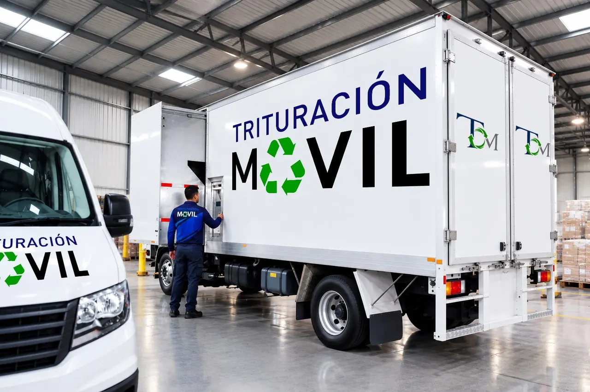
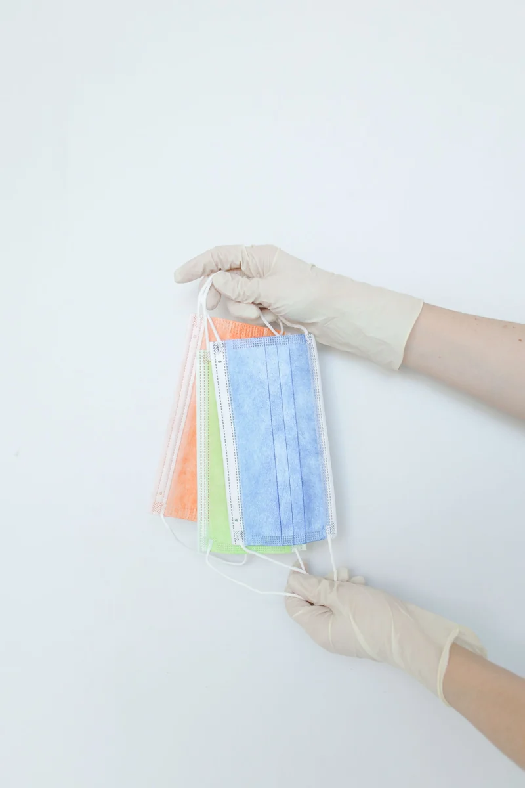
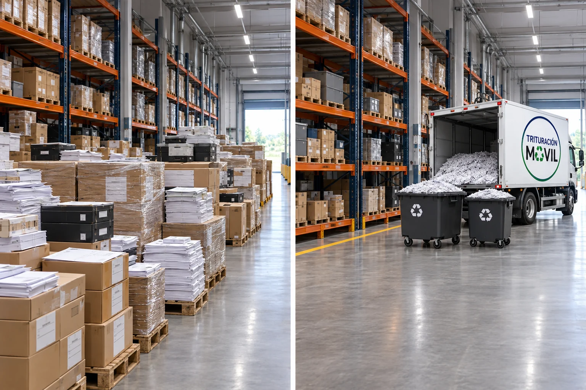
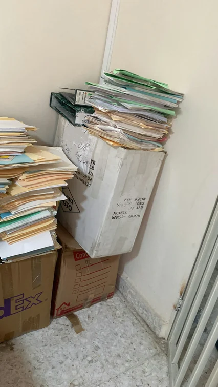
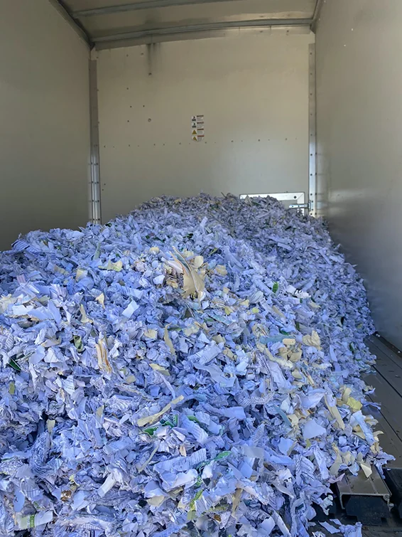
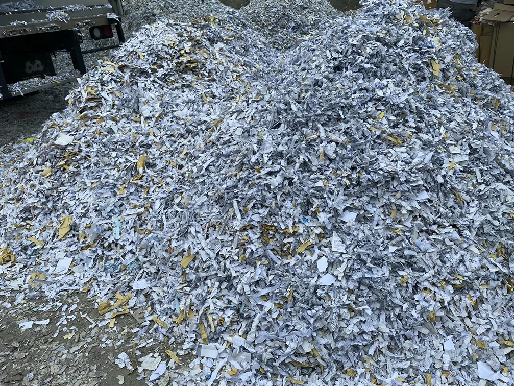

01
Documentos y archivo muerto
Expedientes, contratos, papelería y documentos con información confidencial.
Solicitar cotizaciónDestrucción en sitio para empresas
Destrucción segura
directamente en tu empresa.
En Trituración Móvil nos especializamos en la destrucción segura, confidencial, controlada de materiales sensibles y fuera de uso, todo directamente en las instalaciones de tu empresa.

Nuestros servicios
Ofrecemos soluciones de trituración y destrucción segura para empresas e instituciones, adaptadas a tus necesidades y a distintos tipos de materiales.
Expedientes, contratos, papelería y documentos con información confidencial.
Solicitar cotizaciónSobreinventario y productos caducados, dañados u obsoletos que deben salir de circulación.
Solicitar cotizaciónDiscos duros, memorias USB, CDs y otros soportes de información. El proceso se evalúa según el material.
Solicitar cotizaciónUniformes, prendas con logotipo y textiles en desuso destinados a destrucción.
Solicitar cotizaciónFolletos, catálogos, impresos y materiales de imagen corporativa que deben retirarse de circulación.
Solicitar cotización
Ver imagenInsumos y artículos de salud fuera de uso. Evaluamos las características del material para definir el servicio.
Solicitar cotizaciónFotografías ilustrativas de materiales. Las características y la viabilidad del servicio se revisan durante la evaluación.
Servicio en planta
Nuestra unidad móvil se traslada directamente a las instalaciones de tu empresa, donde el proceso de trituración se realiza en sitio, de manera visible y bajo la supervisión de tu personal, brindando mayor control, transparencia y confianza en la destrucción de tus materiales.
El material se destruye en sitio, antes de salir de la empresa.
El cliente puede presenciar la ejecución del servicio de principio a fin.
El acceso, las maniobras y los tipos de materiales se revisan previamente con el cliente.

Sobreinventario, espacio perdido y documentos sin control.
Área limpia, espacio libre y sobreinventario destruido de forma segura.
Por qué Trituración Móvil
Llegamos con nuestra unidad móvil hasta tu empresa: seguridad, eficiencia y control en cada proceso.
El material se tritura directamente en las instalaciones de tu empresa.
Puedes tomar evidencia y presenciar la destrucción de los materiales durante todo el servicio.
Unidades móviles equipadas con alta tecnología de trituración que llegan hasta tu planta u oficina.
Al finalizar el servicio se entrega una constancia de destrucción con evidencia fotográfica.
Nos adaptamos a tus necesidades, sin cantidades mínimas.
Visita personalizada con soluciones adaptadas a tus necesidades.
Así trabajamos
Cuatro etapas para evaluar tu solicitud, acordar la programación, ejecutar la destrucción y dar seguimiento al servicio.
Revisamos el tipo de material, el volumen aproximado y la ubicación. Las fotografías complementan la evaluación.
Acordamos la fecha y revisamos el acceso de la unidad móvil y el espacio de maniobra.
La unidad móvil y el personal llegan a tus instalaciones. Puedes supervisar la destrucción.
Al finalizar, se firma una bitácora de conformidad con los kilos triturados, se entrega el área de trabajo limpia y se realiza un seguimiento para evaluar la satisfacción del cliente.
La duración y las maniobras se determinan según el material, el volumen y las condiciones de las instalaciones.
Galería
Una mirada al archivo documental y al material después de la trituración. Selecciona una fotografía para verla completa.

Ver imagenCarpetas y documentos organizados en cajas de archivo.

Ver imagenMaterial documental triturado dentro de un contenedor.

Ver imagenVista del papel después del proceso de trituración.
Fotografías proporcionadas de material documental. Los encuadres conservan el contenido de las imágenes de referencia.
Preguntas frecuentes
Cotización, operación en sitio y documentación del servicio.
Consultar al equipoCada servicio se cotiza según el tipo y la cantidad de material. No hay mínimo requerido.
La trituración se realiza en las instalaciones del cliente. El acceso de la unidad móvil y las maniobras necesarias se revisan antes de ejecutar el servicio.
Sí. El cliente puede presenciar la destrucción de los materiales en sus instalaciones.
Al finalizar, se firma una bitácora de conformidad con los kilos triturados, se entrega el área de trabajo limpia y se realiza un seguimiento para evaluar la satisfacción del cliente.
La duración depende del tipo y la cantidad de material, así como de las condiciones operativas y climáticas. La programación se coordina con el cliente.
Contribuimos al cuidado del medio ambiente mediante prácticas responsables en el manejo de los residuos.
Solicitud de cotización
Atención personalizada, trituración en sitio y soluciones a la medida de tu empresa.
Comparte tus datos y el material que necesitas destruir. Nuestro equipo se pondrá en contacto contigo.